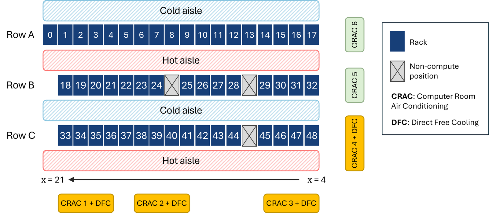
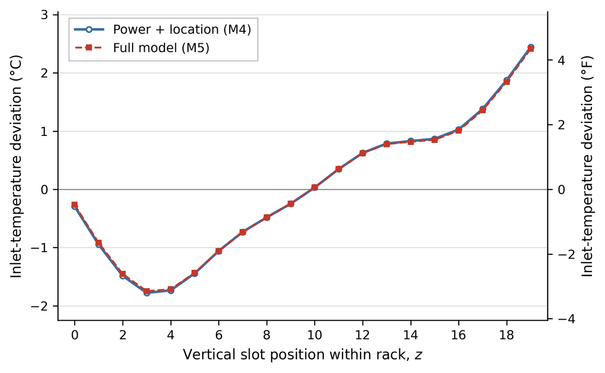

Datacenter Under review
Spatiotemporal Characterization and Short-Term Forecasting of Inlet Temperature in a GPU-Intensive Data Center
Inlet temperature is the air a server actually breathes, and in a GPU data center it differs from node to node. Using one month of measurements from 980 nodes, this study separates two questions that are usually blended together.
The facility


- Data: public operational dataset from a GPU-based HPC facility (Borghesi et al. 2023) · July 2022
- Measurements: inlet temperature and total power for all 980 nodes at ~1-min intervals
- Jobs: 411,348 scheduler records linked to the nodes they ran on
1Location, not power, sets which nodes run warm
Differences in each node's monthly mean inlet temperature were explained step by step. Power and job placement barely help; adding the node's position in the room explains most of the variation.


- Height matters most: vertical position alone lifts R² from 0.049 to 0.435; horizontal position to 0.227
- J-shaped profile: coolest near slot 3, warmest at the top, a 4.2 °C range
- Every hour: the top slot was warmest in all 661 analyzed hours
- New racks: R² 0.531 on racks left out of fitting
2Recent history, not location, predicts the next few minutes
Forecasts started from persistence: assume the temperature stays where it is. A gradient-boosted model that learns from each node's last hour of inlet temperature beats it at every horizon.
| Horizon | Persistence MAE | Inlet-history MAE | Change |
|---|---|---|---|
| 5 min | 0.110 °C | 0.106 °C | −4.4% |
| 10 min | 0.146 °C | 0.139 °C | −4.8% |
| 30 min | 0.225 °C | 0.220 °C | −2.2% |
- Location adds little: once recent temperatures are known, location improves 5–10 min forecasts by only ~0.002 °C and makes the 30-min forecast worse than persistence
- Power alone fails: a power-only model (1.79 °C error) does no better than one constant guess
- Why: a node's location is already reflected in its current temperature
Warm is not the same as volatile
Putting the two findings on one rack shows two different kinds of risk.
Top 5 slots · sustained exposure
Warmest, up to about +2.4 °C above average, but changes least: 10-min forecast error 0.098 °C.
Bottom 5 slots · short-term change
Cooler, yet changes fastest: 10-min forecast error 0.182 °C, nearly twice the top.
For monitoring, this suggests two targets: use location to find nodes with sustained thermal exposure, and keep reliable, continuous inlet sensors to anticipate short-term changes. With the full model, misses of 1 °C or more (underprediction) fell from 1.01% to 0.79%.
Scope
- One month at one facility; the profiles are facility-specific, not general rules
- Associations, not causes: CRAC operation, airflow, and actual GPU utilization were not measured
- Cooling control, workload relocation, and energy savings were not evaluated
Study details
- Spatial models: regression on node power, job occupancy, requested GPUs, row, and natural cubic splines of x and z · rack-level cross-validation
- Forecasting: gradient-boosted trees predicting the temperature change 5, 10, and 30 min ahead · trained Jul 1–21, tested Jul 26–31
- Authors: Seungmin Lee, Juwan Ha, Yujin Kim, Jaeyoon Byun, Soolyeon Cho